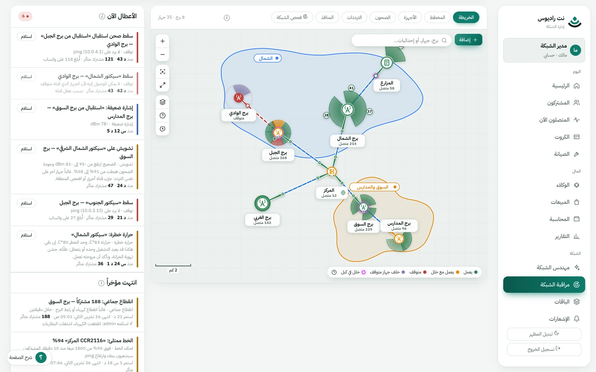
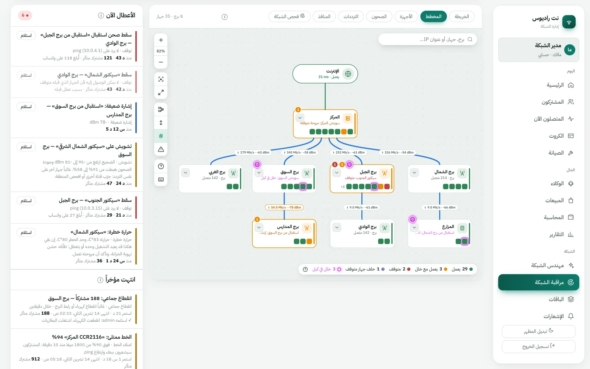
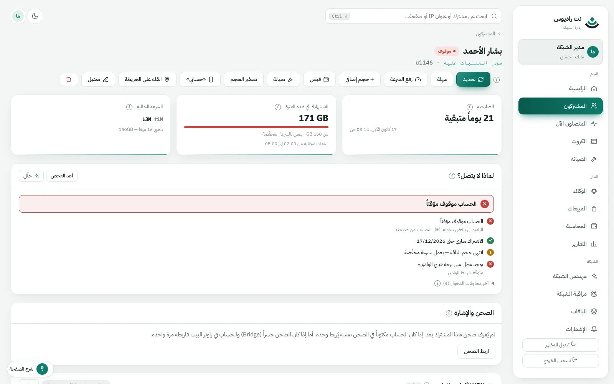
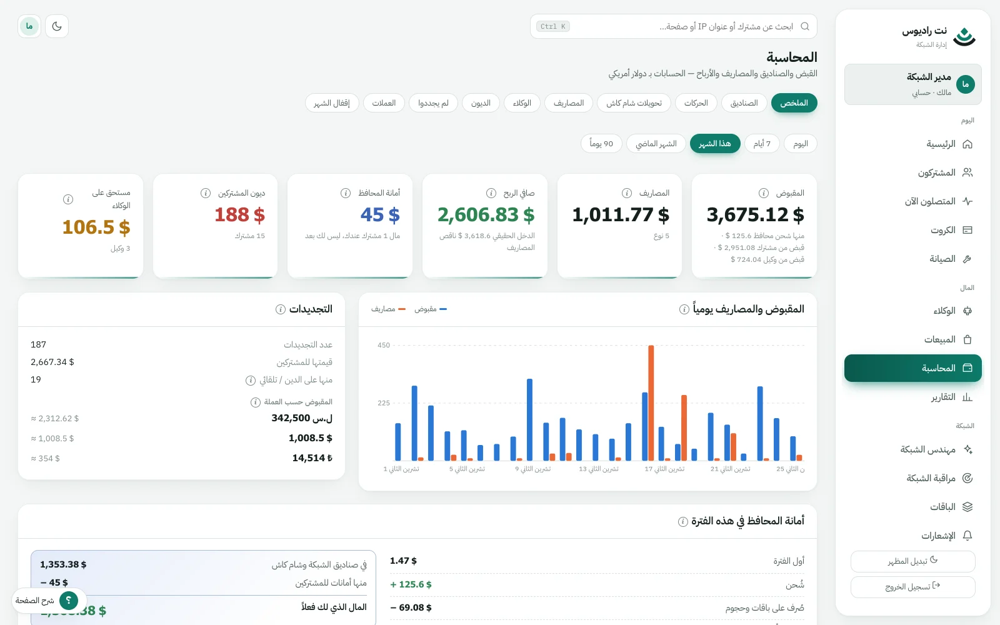
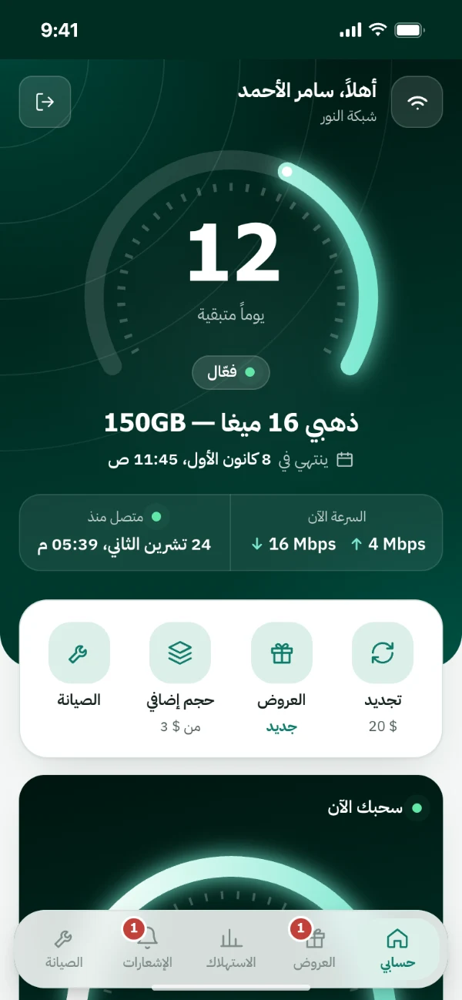
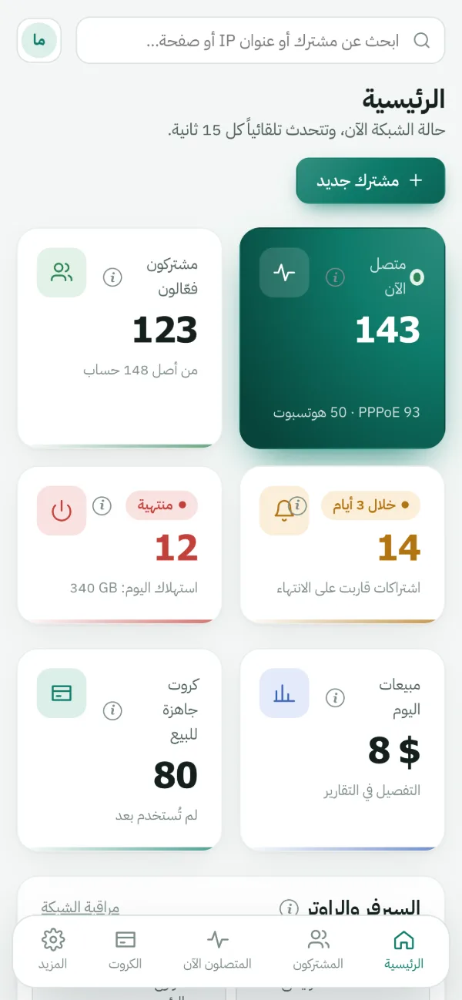
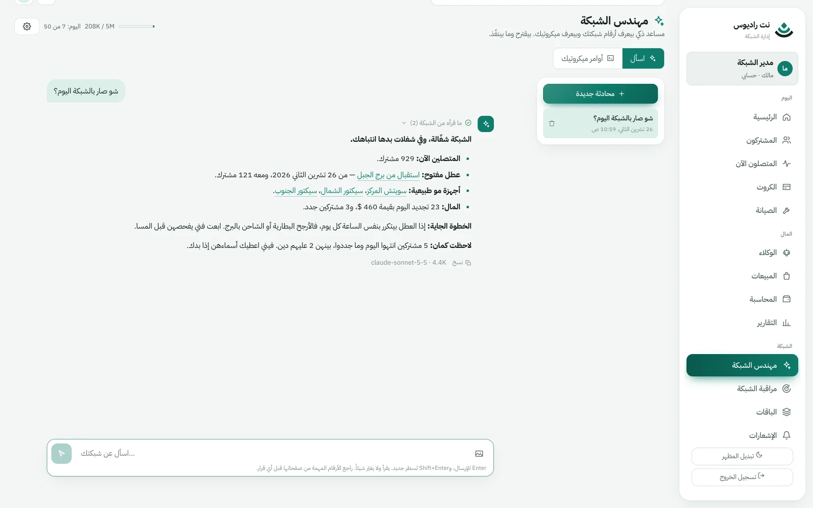
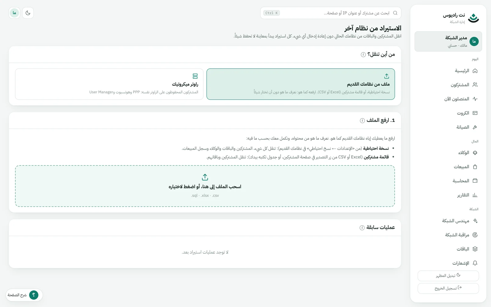

وضع الطوارئ
إن انقطع السيرفر، يُدخل الراوتر مشتركيك بنفسه حتى يعود.
المشتركون والأبراج والوكلاء والمحاسبة في لوحة واحدة، بالعربية، تعمل على جهاز عندك أو على سيرفر مستضاف.
بيانات تجريبية · بلا تسجيل · تفتح من المتصفح
الأبراج والصحون والوصلات على خريطة حية. ما يتعطل يتغيّر لونه في لحظته، وتعرف من تأثر من مشتركيك.
رسالة واتساب باسم البرج وعدد المتأثرين في أي ساعة، ورسالة ثانية حين يعود.

ترى كل برج وسيكتور وصحن ووصلة، وكم مشتركاً على كل واحد منها. حين يسقط جهاز تعرف أيّ جهاز هو، ولماذا، ومن انقطع بسببه.

باقته وتاريخ انتهائه واستهلاكه وجلسته الحالية وبرجه. تجدّد له أو تغيّر سرعته بضغطة، والتغيير يصل الراوتر في لحظته.

وكلاء ونقاط بيع بأرصدتهم، صناديق وديون وتقارير مبيعات. كل عملية مسجّلة باسم من قام بها ووقتها.

صفحة لكل مشترك تفتح من المتصفح بلا تطبيق: يرى باقته وما بقي منها واستهلاكه، ويصله تذكير الانتهاء على واتساب.


تسأله بالعربية عن مشكلة في الشبكة، فيقرأ حال الراوتر ويشرح السبب ويقترح الحل خطوة خطوة.

إن انقطع السيرفر، يُدخل الراوتر مشتركيك بنفسه حتى يعود.
نسخة كل يوم، وأخرى خارج السيرفر على تيليغرام.
يحدّث نفسه من اللوحة، ويعود وحده إن لم تعمل النسخة الجديدة.
حال الشبكة والأعطال على تلفاز المكتب، تتحدّث وحدها.
تمرير برامج تختارها أنت عبر مخرج خاص، بضغطة لكل برنامج.
صفحة أي سيكتور أو صحن أو راوتر من أي مدينة، بلا عنوان ثابت.
جهاز ثانٍ يتابع الأول ويأخذ مكانه يوم العطل.
ترحيب وتذكير انتهاء وتجديد للمشترك، وتنبيهات الأعطال لفريقك.
ميني بي سي أو لابتوب في مكتب الشبكة. يعمل حتى لو انقطع الإنترنت عن المكتب، وبياناتك عندك.
تفتح لوحتك من أي مكان على عنوانك الخاص. الراوترات تتصل بالسيرفر بأنفاق مشفّرة يصنعها النظام.

لوحتك على سيرفر مستضاف. الحجم هو عدد المشتركين المتصلين في اللحظة نفسها، لا عدد الحسابات. وكل المزايا في كل الأحجام.
كم مشتركاً يتصل عندك في وقت واحد؟
السعر لسنة كاملة على سيرفر مستضاف، ومعه السيرفر والنسخ الاحتياطي والتحديثات. أكثر من 3000 متصل، أو تريده على جهاز عندك؟ تواصل معنا.
لوحة كاملة ببيانات تجريبية تفتح في متصفحك. اضغط وعدّل وجرّب كما تشاء: لا تسجيل، ولا شيء ينكسر.
افتح اللوحة التجريبيةاكتب لنا عدد مشتركيك ونوع راوترك، ونجهّز لك لوحتك.
تواصل على واتساب +963 994 398 849